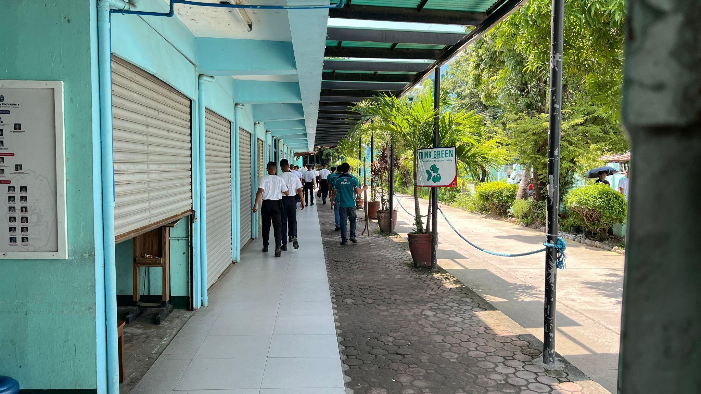
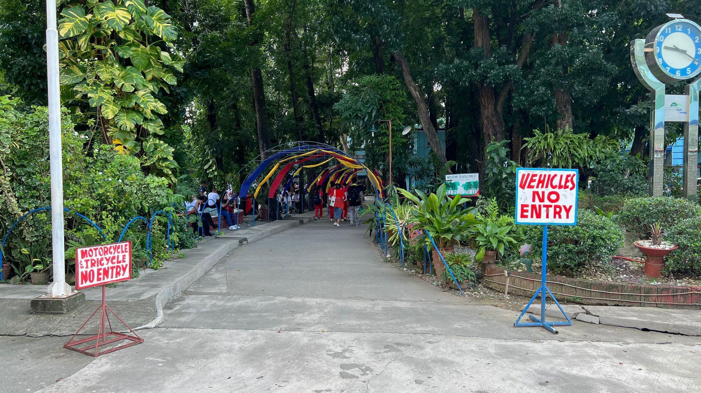
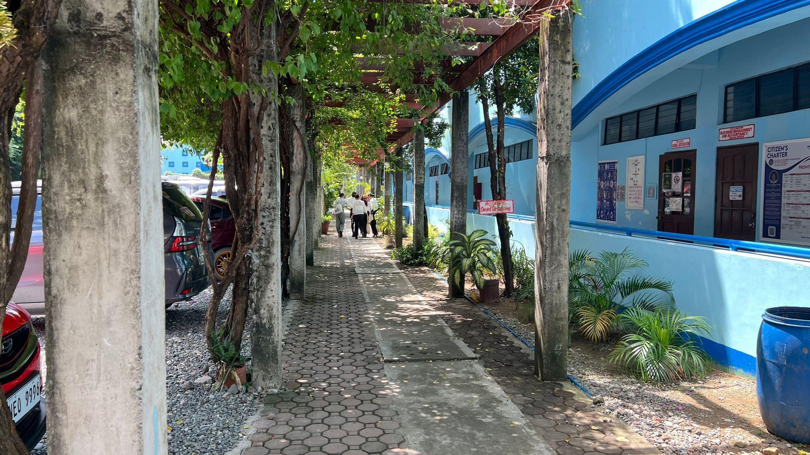

| Pedestrian Path Policy and Infrastructure | |
|---|---|
| Sidewalks & Pedestrian Zones | Walkways & Safety Signage |
|
 Sidewalk
|
Pedestrian
|
|
 Walkways
|
 Walkways
|
Urdaneta City University demonstrates a strong commitment to creating a safe, accessible, and sustainable pedestrian environment through well-designed infrastructure and clearly established campus policies. The university prioritizes pedestrian mobility by ensuring that walkways are properly planned and physically separated from vehicle routes, minimizing the risk of accidents and promoting a safer walking experience for students, faculty, staff, and visitors.
The campus is equipped with dedicated pedestrian pathways that are strategically located to connect key academic buildings, offices, and facilities. These pathways are designed to accommodate high foot traffic while maintaining smooth and efficient movement across campus. To enhance safety during nighttime, UCU has installed 27 solar-powered streetlights along pedestrian routes. These lights automatically adjust based on natural light conditions, ensuring that walkways remain well-lit, energy-efficient, and environmentally friendly.
Accessibility is a key component of UCU's pedestrian system. The university has installed ramps and guiding blocks in various areas to support individuals with disabilities, ensuring compliance with inclusive design standards. These features allow persons with mobility impairments and visual impairments to navigate the campus independently and safely. Additionally, handrails and gently sloped pavements are incorporated into pathway designs to provide added stability and ease of movement for all users.
To further enhance comfort and usability, the university has constructed covered walkways and shaded areas near major buildings. These structures protect pedestrians from harsh sunlight and heavy rainfall, making it more convenient to move around the campus regardless of weather conditions. This contributes to a more user-friendly and climate-responsive campus environment.
Directional signage systems are also strategically placed throughout the university to assist with navigation. These signs help guide both new and returning students, staff, and visitors, ensuring clear wayfinding and reducing confusion when moving between different campus locations.
The university's commitment to pedestrian safety and sustainability is guided by its Pedestrian Path Policy, which includes the following key principles:
Separation of pedestrian and vehicle pathways to reduce accidents and ensure safe movement.
Provision of accessibility features, including ramps and guiding blocks, designed to support individuals with physical and visual disabilities.
Installation of adequate lighting systems, specifically the use of 27 solar-powered street lamps, which automatically operate based on light intensity to ensure visibility during nighttime while conserving energy.
Overall, these initiatives reflect UCU's holistic approach to campus planning, emphasizing safety, accessibility, energy efficiency, and environmental sustainability. By continuously improving pedestrian infrastructure, the university fosters a walkable, inclusive, and environmentally responsible campus that supports the well-being of its entire community.
Available, designed for **safety, convenience**, and in some parts provided with disabled-friendly features.